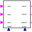
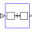

StateGraphRootRoot of a StateGraph (has to be present on the highest level of a StateGraph) |
|
Information
This information is part of the Modelica Standard Library maintained by the Modelica Association.
On the highest level of a StateGraph, an instance of StateGraphRoot has to be present.
The StateGraphRoot object is needed, since all Step objects have an "outer" reference to communicate with the "nearest" CompositeStep (which inherits from PartialCompositeStep), especially to abort a CompositeStep via the "suspend" port. Even if no "CompositeStep" is present, on highest level a corresponding "inner" definition is needed and is provided by the StateGraphRoot object.
Outputs (3)
| suspend |
Default Value: false Type: Boolean Description: = true, if suspend transition of CompositeStep fires |
|---|---|
| resume |
Default Value: false Type: Boolean Description: = true, if resume transition of CompositeStep fires |
| activeSteps |
Type: Integer Description: Number of active steps within the stategraph |
Connectors (1)
| subgraphStatePort |
|---|
Used in Examples (7)
|
Modelica.StateGraph.Examples A first simple StateGraph example |
|
|
Modelica.StateGraph.Examples A variant of the first simple StateGraph example |
|
|
Modelica.StateGraph.Examples A variant of the first simple StateGraph example |
|
|
Modelica.StateGraph.Examples Example to demonstrate parallel and alternative execution paths |
|
|
Modelica.StateGraph.Examples Example to demonstrate parallel activities described by a StateGraph |
|
|
Modelica.StateGraph.Examples Example to demonstrate how a hierarchically structured StateGraph can suspend and resume actions on different levels |
|
|
Modelica.StateGraph.Examples Demonstrating the controller of a tank filling/emptying system |
Used in Components (2)
|  |
Modelica.Fluid.Examples.ControlledTankSystem.Utilities Controller for tank system |
|  |
Modelica.Fluid.Examples.AST_BatchPlant.BaseClasses |